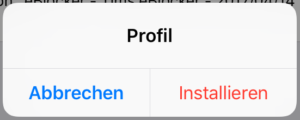
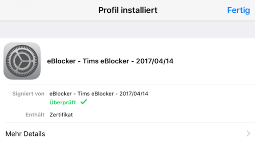
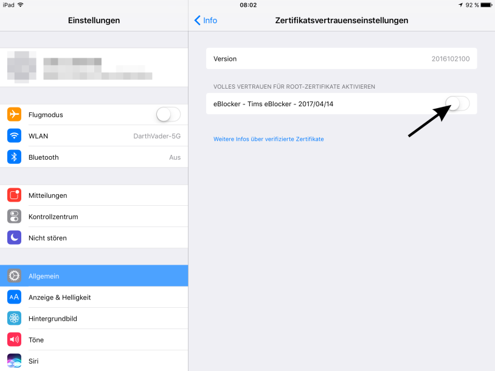

Deutsch | English
eBlocker Hilfe > FAQs > HTTPS Funktion (SSL/HTTPS)
Das eBlocker Zertifikat in iOS hinterlegen.
Mit nur wenigen Schritten haben Sie das Zertifikat hinterlegt. Benutzen Sie bitte den iOS Safari Browser.
Öffnen Sie die eBlocker HTTPS Konfigurationsseite, oder das eBlocker Dashboard.
Klicken Sie in auf der HTTPS Konfigurationsseite auf den Button HTTPS ASSISTENT STARTEN, oder in dem eBlocker Dashboard in der HTTPS Karte auf den Link HTTPS ASSISTENT STARTEN.
Der Assistent wird Ihnen Schritt für Schritt aufzeigen, wie Sie das eBlocker Zertifikat in iOS hinterlegen.
Alternativ können Sie das eBlocker Zertifikat auch ohne den Assistenten hinterlegen.
- Klicken Sie auf der HTTPS Konfigurationsseite auf den Reiter ZERTIFIKAT.
- Nun klicken Sie auf den Button HERUNTERLADEN.
- iOS wird Sie fragen, ob diese Webseite ein Konfigurationsprofil laden darf. Klicken Sie in diesem Dialog auf ZULASSEN.
- Öffnen Sie nun die iOS-Einstellungen.
- Klicken links auf das Menü ALLGEMEIN und auf der rechten Seite auf PROFIL.
- Klicken Sie das eBlocker Konfigurationsprofil an.
- Klicken Sie nun auf "Installieren".

- Im nachfolgenden Dialog klicken Sie nochmals auf "Installieren".

- Bestätigen das Hinterlegen des Zertifikats mit dem Button "Installieren".

- Das eBlocker-Zertifikat ist dann in iOS aufgenommen worden.

Ab der iOS Version 10.3 muss das hinterlegte eBlocker-Zertifikat noch einmal aktiviert werden.
- Öffnen Sie die iOS Einstellungen und navigieren zu "Allgemein" > "Info" > "Zertifikatsvertrauenseinstellungen".
- Dort finden Sie das zuvor hinterlegte eBlocker-Zertifikat und können es jetzt aktivieren.
